UX Designer · 2024–2025
Ublo
Plateforme de gestion immobilière · France
En tant qu'UX Designer au sein de l'équipe Ublo, une plateforme de gestion immobilière basée en France avec plus de 2 000 utilisateurs et 20 clients dans tout le pays, mon rôle consistait à améliorer continuellement l'interface et l'expérience utilisateur globale.
J'ai travaillé de manière itérative sur plus de 15 nouvelles fonctionnalités et 20 améliorations de la plateforme, apportant des améliorations continues directement alignées sur les retours clients et les exigences métier.
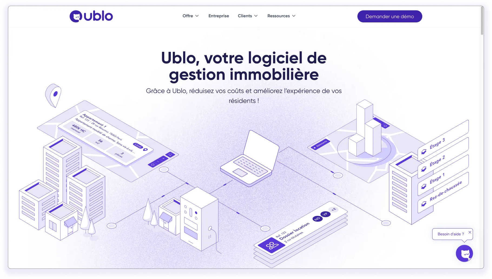
Continue Itération
J'ai exploré l'utilisation d'outils d'intelligence artificielle dans les phases de conception et de recherche — de l'analyse du comportement des utilisateurs assistée par l'IA au prototypage des interactions et à la rationalisation de la génération de contenu.
Tout au long du processus, j'ai mené :
- Recherches techniques pour comprendre les limites et les opportunités du système.
- Analyse comparative pour identifier les meilleures pratiques et les normes du marché.
- Cartographie du parcours utilisateur et création de user stories pour structurer des solutions logiques et efficaces.
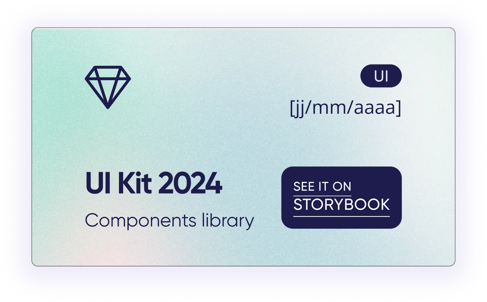
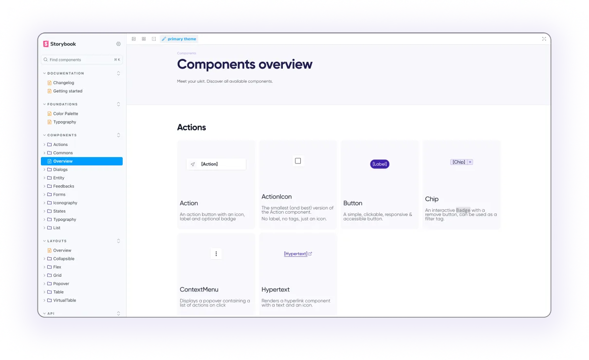
Auditer l'expérience utilisateur
J'ai réalisé un audit UX complet de la plateforme afin d'identifier les principaux points de friction et d'aligner l'expérience utilisateur avec les objectifs business. L'analyse s'est appuyée sur une évaluation heuristique (Nielsen, Bastien & Scapin), l'étude des parcours utilisateurs clés, de l'architecture de l'information, de la cohérence visuelle et de l'accessibilité (WCAG), complétée par l'analyse de données analytics.
Les principes clés de l'UX ont guidé chaque proposition :
- Clarté des objectifs des utilisateurs
- Nature et priorité de l'architecture de l'information
- Hiérarchie claire du contenu et des éléments de l'interface
- Identification des actions clés de l'utilisateur
- Modèles d'interaction optimisés entre l'utilisateur et l'interface
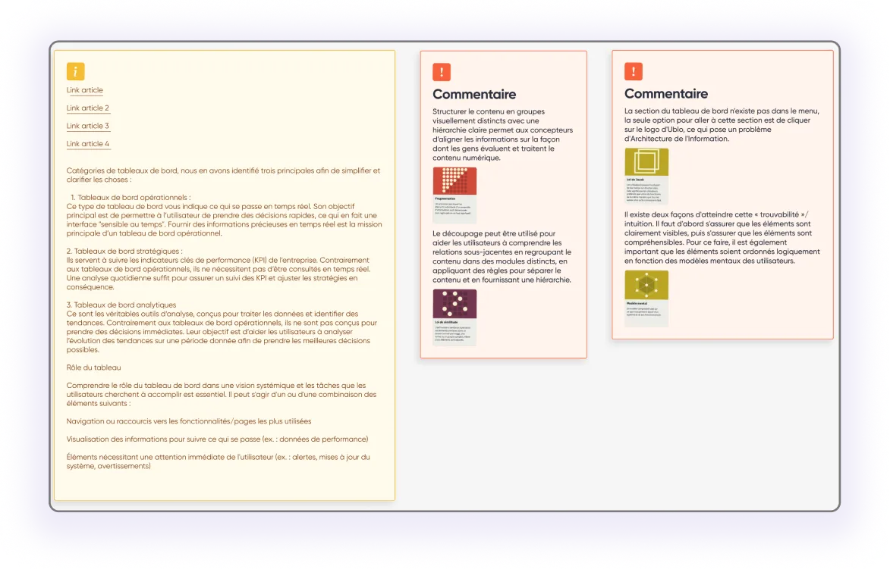
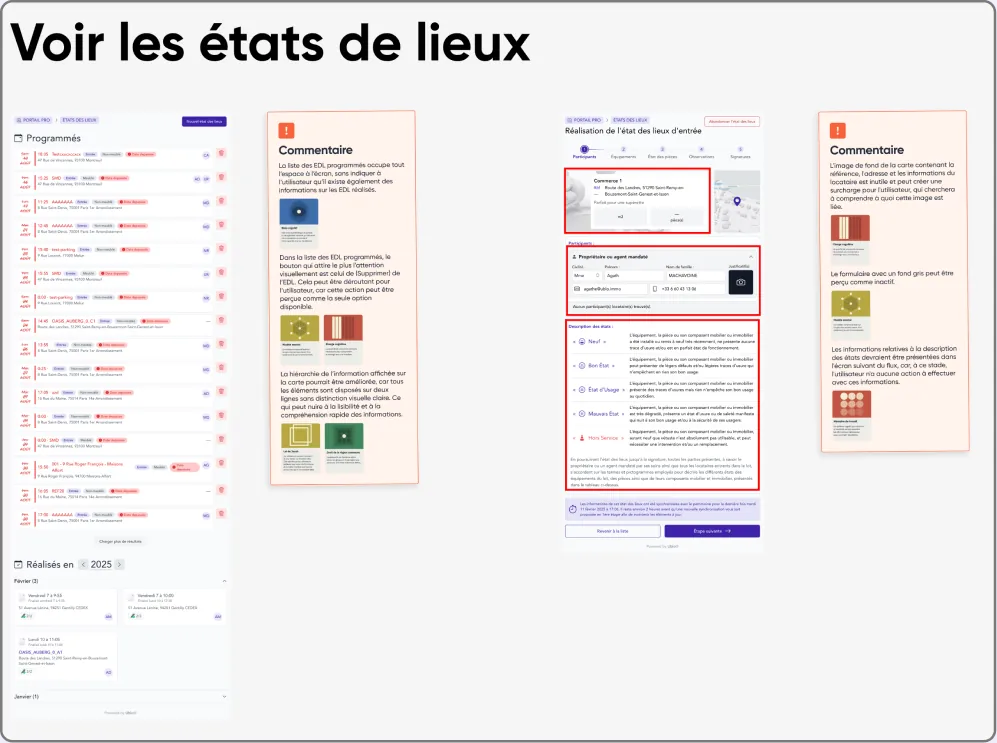
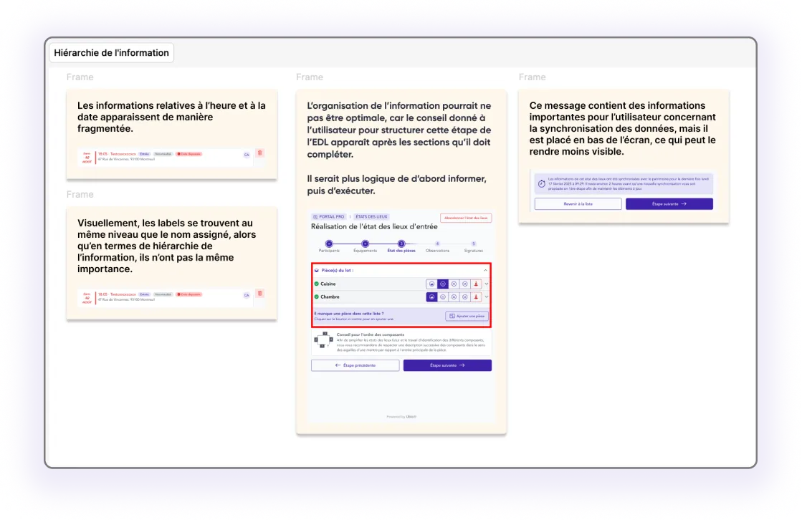
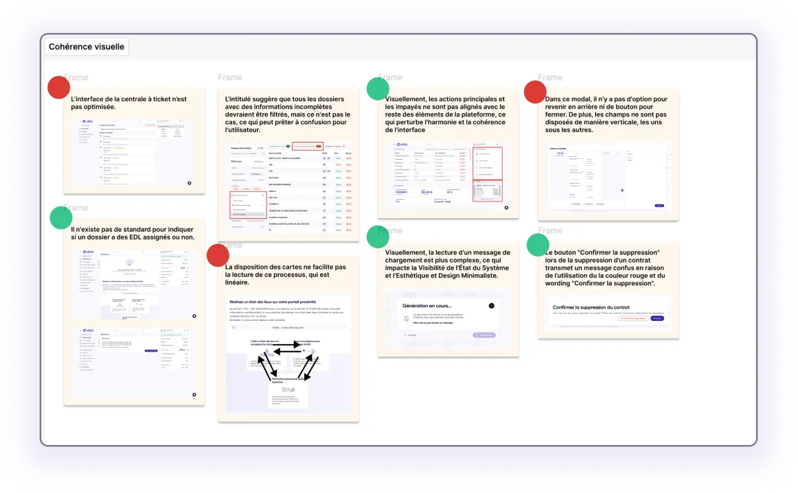
Nouvelles fonctionnalités
J'ai contribué à la réflexion et au développement de nouvelles fonctionnalités axées sur la gestion locative. Mon rôle consistait à :
- Cadrage des fonctionnalités
- Recherche et entretiens avec les utilisateurs
- Analyse comparative concurrentielle
- Ateliers d'idéation et de brainstorming
- Wireframing basse et moyenne fidélité
- Livraison des premiers prototypes fonctionnels dans Figma
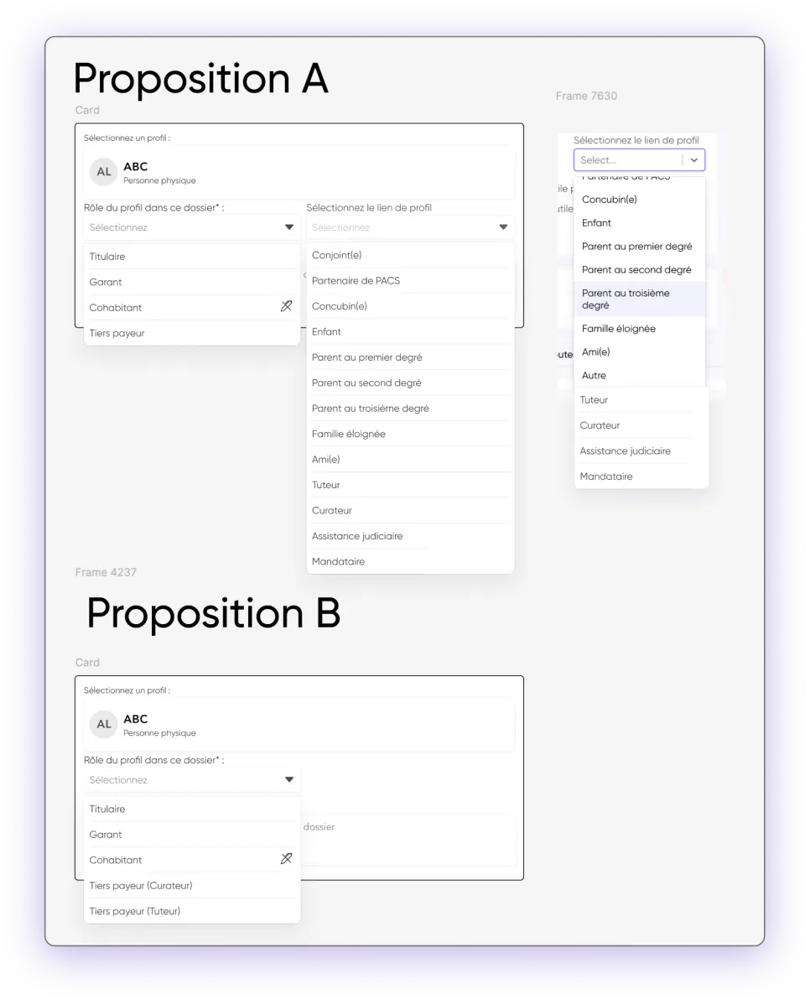
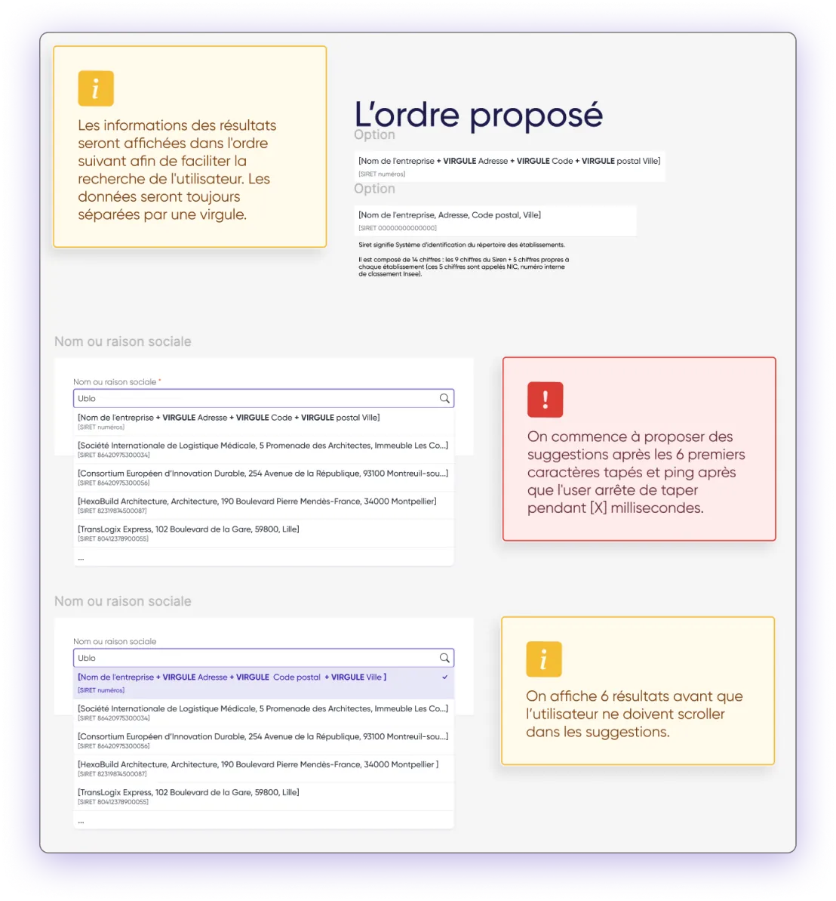
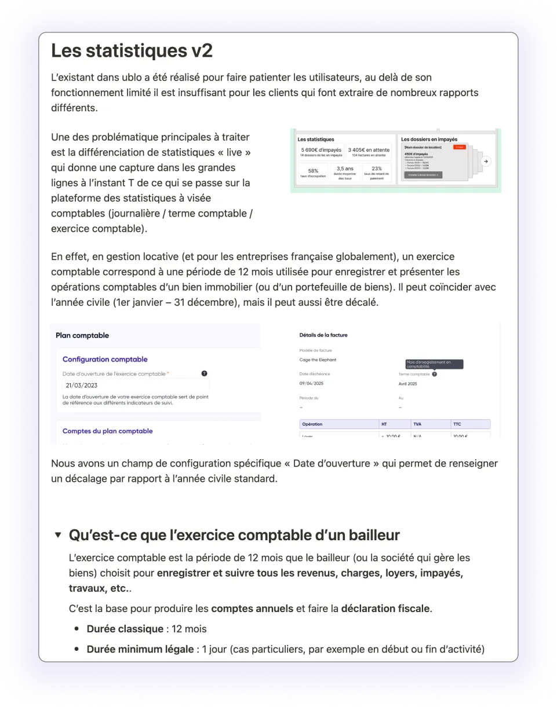
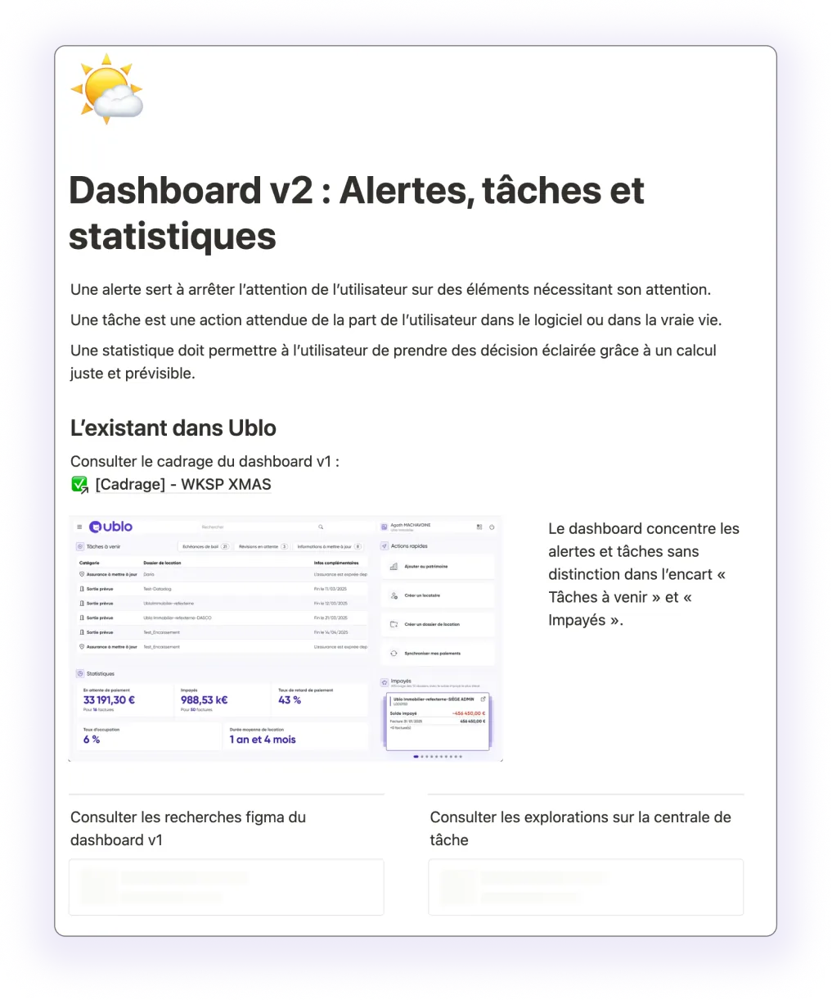
Rédaction UX
J'ai rédigé une rédaction UX claire et produit toute la documentation de support, fournissant des spécifications de conception complètes et des écrans prêts à être transférés à l'équipe de développement. Pour renforcer notre prise de décision, j'ai introduit et suivi des KPI UX clés :
- Taux de réussite des tâches
- Temps de travail
- Scores SUS (System Usability Scale)
- Points de dépôt chez l'utilisateur
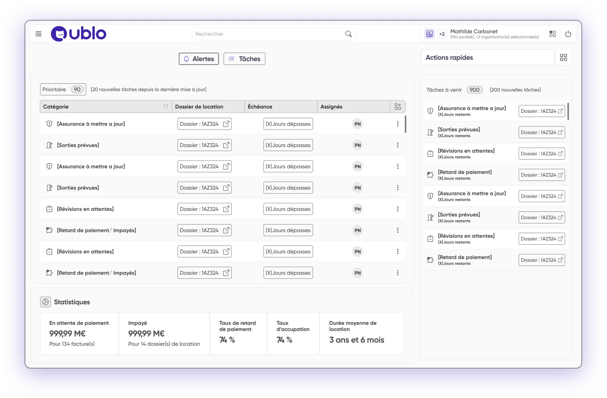
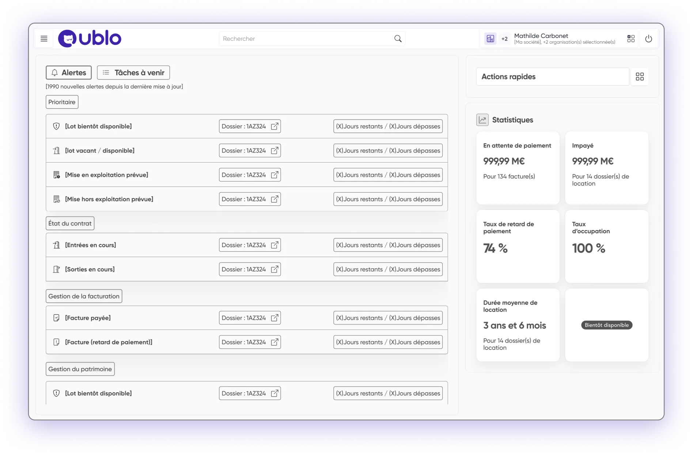
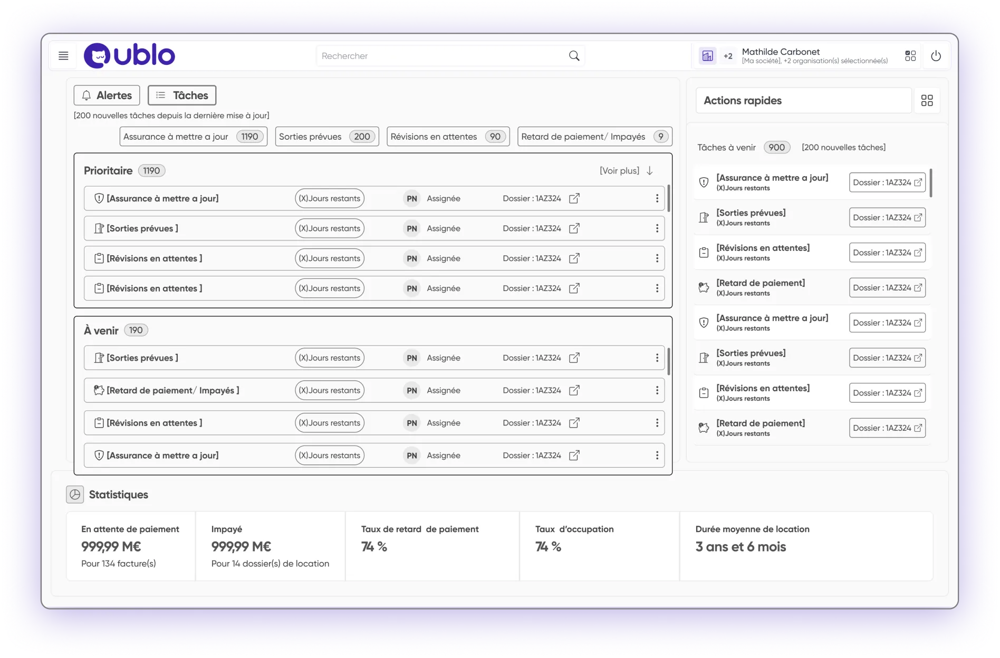
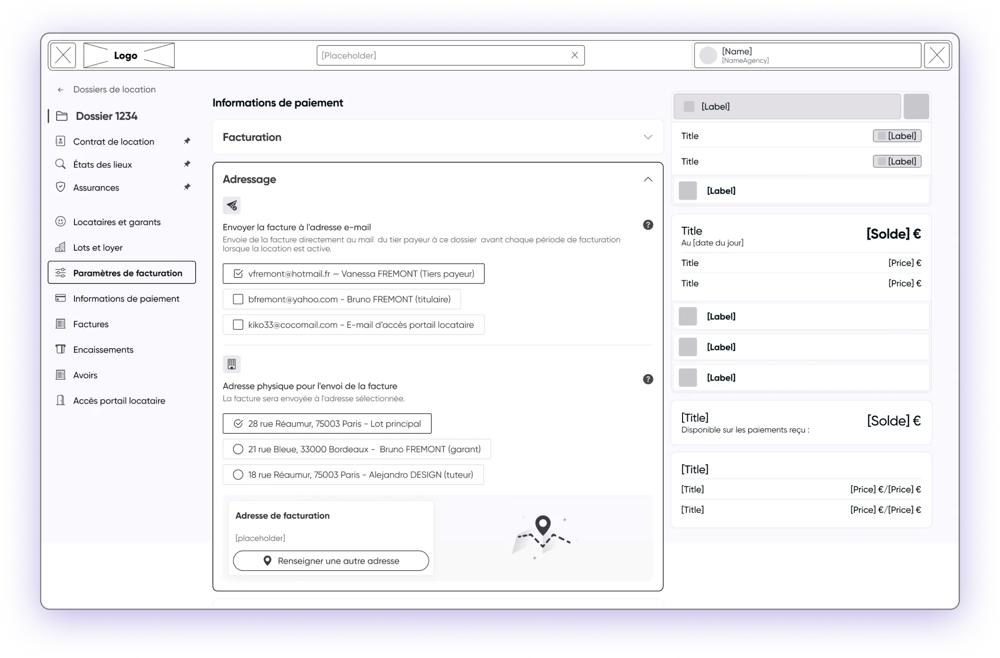